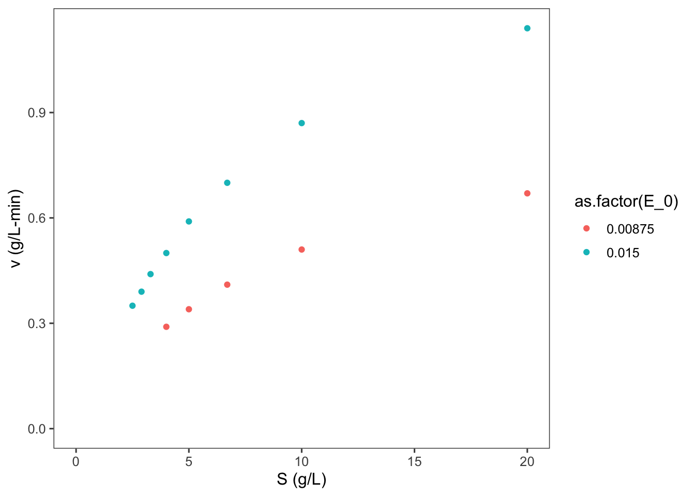
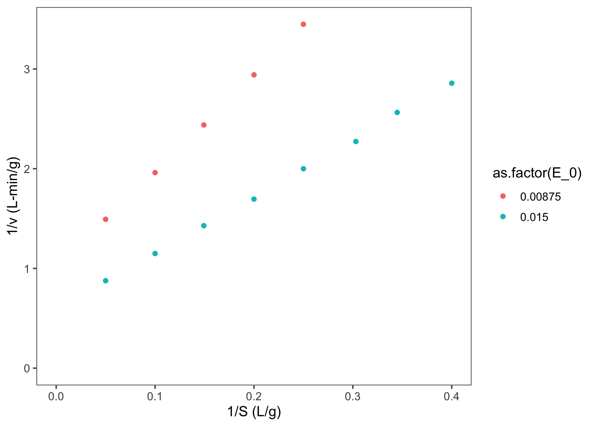
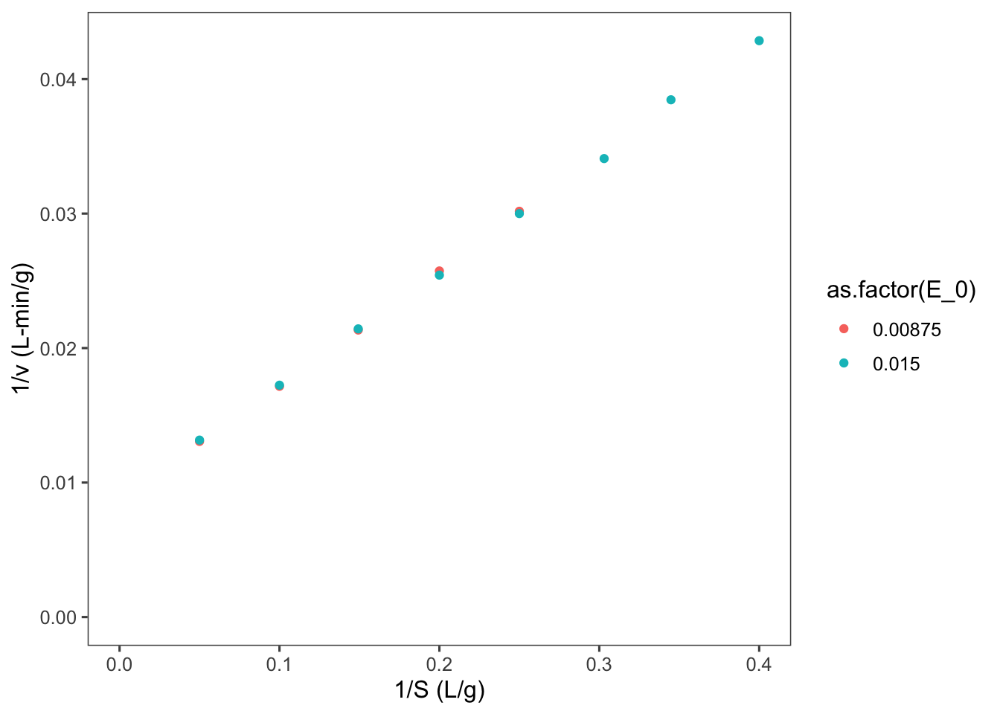
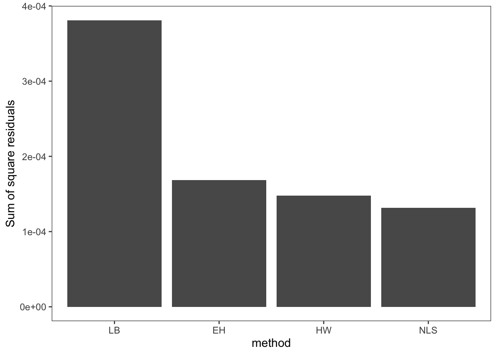

5 Determining Enzyme Rate Parameters
Now that we have derived plausible rate equations for simple enzymes we need to test how these model equations compare to real experimental reaction rates.
Taking a look at our model: \[\nu = \frac{V_mS}{K_m + S}\] where \(V_m = k_{cat}E_0 = k_2E_0\), we find two parameters, \(V_m\) and \(K_m\) which we need to estimate based on experimental data. Although with today’s computational power these parameters could be estimated in many possible ways with non-linear regression, historically and still often today linearizations of this enzyme kinetic model are used to fit these parameters to experimental data.
As an aside, we must discuss once again nomenclature issues in the biochemical literature. Unfortunately there is no consensus on what symbol should be used for reaction velocity. In some texts the greek symbol, \(\nu\) (nu), is used in others \(V\), is used. \(V\) can be easily confused with the volume of a reactor, so be sure differentiate your notation when sizing reactors.
5.1 Linearization methods
5.1.1 Lineweaver-Burk plot
One method of linearization would be to invert the entire model equation. \[\frac{1}{\nu} = \frac{1}{V_m} + \frac{K_m}{V_m} \frac{1}{S}\] The resulting plot is called a Lineweaver-Burk plot.
5.1.1.1 ???Questions???
What would you plot as x and y, and what would be the slope and y-intercept of the plot be.
A Lineweaver-Burke plot is \(1/\nu\) (y) vs \(1/S\) (x). The slope is \(K_m/V_m\) and the y-intercept is \(1/V_m\) ***
This plot is also sometimes called a double-reciprocal plot, because we plot the reciprocal of our independent variable \(\nu\) versus our dependent variable \(S\).
To use this plot to find \(V_m\) and \(K_m\) we need to collect reaction velocity data (\(\nu = dP/dt = -dS/dt\)) at different initial substrate concentrations. The reaction velocity will of course decrease throughout the experiment, but to match the initial substrate concentrations, we want to find the initial velocity, i.e. the initial slope of the curve of product or substrate versus time.
You can perhaps see how determining the instantaneous initial velocity of this curve can be difficult and error prone. We need very rapid and accurate measurements of product or substrate in order to determine this initial slope. Due to the properties of the reciprocal, the error at low substrate concentrations is amplified and has a strong influence on the slope and intercept of the graph. For these reasons the Lineweaver-Burke plot provides better estimates of \(V_m\) than \(K_m\).
5.1.2 Eadie-Hofstee Plot
To achieve better estimates of \(K_m\) we can use a different linearization and plot of the Michaelis-Menten equation, called the Eadie-Hofstee plot.
\[\nu = V_m - K_m \frac{\nu}{S}\]
In Eadie-Hofstee plot, \(\nu\) is plotted against \(\nu/S\), and \(-K_m\) is the slope and \(V_m\) is the y-intercept. While there is still potential for errors in the calculation of \(\nu\) the issues with low substrate concentrations are lessened. Because the error in \(\nu\) is in x and y coordinates however, this plot does not yield the most accurate measurements of \(V_m\).
5.1.2.1 ???Questions???
Why does this error not affect the slope?
Error still has the potential to affect the slope, but systematic error will affect both the x and y coordinates equally therefore cancelling the effect of this error on the slope. ***
5.1.3 Hanes-Woolf plot
There is one more linearization that is commonly used for parameter estimation called the Hanes-Woolf plot. The Hanes-Woolf plot has the form \[\frac{S}{\nu} = \frac{K_m}{V_m} + \frac{1}{V_m}S\] Therefore \(S/\nu\) is plotted against \(S\) and \(1/V_m\) is the slope an \(K_m/V_m\) is the y-intercept. The Hanes-Woolf plot accurately estimates \(V_m\), the slope, but again the y-intercept can be innacurate as in this case we cannot measure the reaction velocity at \(S = 0\).
Let’s look at an some example data and calculate \(V_m\) and \(K_m\) in several ways. Here we have performed experiments with two different concentrations of the same purified enzyme across a range of substrate concentrations, and calculated the initial velocity of each reaction.
S <- c(20, 10, 6.7, 5, 4, 3.3, 2.9, 2.5) # substrate concentration (g/L)
v_0.015 <- c(1.14, 0.87, 0.7, 0.59, 0.5, 0.44, 0.39,
0.35) # reaction velocity (g/L-min) at E_0 = 0.015 g/L
v_0.00875 <- c(0.67, 0.51, 0.41, 0.34, 0.29, NA, NA,
NA) # reaction velocity (g/L-min) at E_0 = 0.00875 g/L
data <- data.frame(S, v_0.015, v_0.00875)
require(knitr)
knitr::kable(data)| S | v_0.015 | v_0.00875 |
|---|---|---|
| 20.0 | 1.14 | 0.67 |
| 10.0 | 0.87 | 0.51 |
| 6.7 | 0.70 | 0.41 |
| 5.0 | 0.59 | 0.34 |
| 4.0 | 0.50 | 0.29 |
| 3.3 | 0.44 | NA |
| 2.9 | 0.39 | NA |
| 2.5 | 0.35 | NA |
Sometimes we won’t know the concentration of our enzyme, if say we are working with just a cell lysate or if we are unable to completly purify our enzyme. In this case we will just use a specific activity of the mixture. Specific activity is just the activity of the enzyme per mass of total protein in the complex mixture. The enzyme activity is measure in units of product formed per time at particular conditions (e.g. temperature, pH, substrate concentration, etc.).
Let’s initially look at this data by plotting \(\nu\) vs \(S\) as dictated by the Michaelis-Menten equation.
require(tidyr)
data <- tidyr::gather(data = data, key = E_0, value = v,
v_0.00875, v_0.015)
require(stringr)
data$E_0 <- as.numeric(stringr::str_remove(string = data$E_0,
pattern = "v_"))
require(ggplot2)
ggplot2::ggplot(data = data, mapping = aes(x = S, y = v,
color = as.factor(E_0))) + geom_point() + labs(y = "v (g/L-min)",
x = "S (g/L)") + expand_limits(x = 0, y = 0)## Warning: Removed 3 rows containing missing values
## (geom_point).
5.1.3.1 ???Questions???
What can you say about this graph?
The higher concentration of enzyme has a higher velocity across all substrate concentrations. The shape of the two curves is similar. As substrate concentration increases the increase in reaction velocity decreases. ***
Now let’s make a Lineweaver-Burk plot. \[\frac{1}{\nu} = \frac{1}{V_m} + \frac{K_m}{V_m} \frac{1}{S}\]
data$LB.y <- 1/data$v
data$LB.x <- 1/data$S
ggplot2::ggplot(data = data, mapping = aes(x = LB.x,
y = LB.y, color = as.factor(E_0))) + geom_point() +
labs(y = "1/v (L-min/g)", x = "1/S (L/g)") + expand_limits(x = 0,
y = 0)## Warning: Removed 3 rows containing missing values
## (geom_point).
5.1.3.2 ???Questions???
Why are there two lines here?
Do not forget that \(V_m = k_{cat}E_0\). So the slope of these lines is really \(\frac{K_m}{k_{cat}E_0}\). ***
There are two ways that we could go about calculating \(K_m\) and and \(V_m\) or \(k_{cat}\) from this data, either find the slope and intercept of both of the above lines and calcuate 2 parameters and then average them, or we could include the enzyme concentration in our linearization. It is best to do the later as it will allow us to more accurately know the uncertainty in our parameter estimates. To do this we will divide the velocity by \(E_0\) to allow us to linearize the right hand side of the Michaelis-Menten equation in terms of \(k_{cat}\). \[\nu = \frac{k_{cat}E_0S}{K_m + S}\] \[\frac{\nu}{E_0} = \frac{k_{cat}S}{K_m + S}\] Now invert to linearize \[\frac{E_0}{\nu} = \frac{K_m}{k_{cat}S} + \frac{1}{k_{cat}}\]
So let’s now plot \(E_0/\nu\) vs \(1/(S)\).
data$LB.y <- data$E_0/data$v
data$LB.x <- 1/data$S
ggplot2::ggplot(data = data, mapping = aes(x = LB.x,
y = LB.y, color = as.factor(E_0))) + geom_point() +
labs(y = "1/v (L-min/g)", x = "1/S (L/g)") + expand_limits(x = 0,
y = 0)## Warning: Removed 3 rows containing missing values
## (geom_point). Notice that our two enzyme concentrations now are plotted nearly perfectly overtop of each other. Now we can use linear regression to find the slope and intercept of the line of best fit.
LB <- lm(formula = LB.y ~ LB.x, data = data)
summary(LB)##
## Call:
## lm(formula = LB.y ~ LB.x, data = data)
##
## Residuals:
## Min 1Q Median 3Q
## -4.320e-04 -7.006e-05 5.760e-06 9.224e-05
## Max
## 3.779e-04
##
## Coefficients:
## Estimate Std. Error t value Pr(>|t|)
## (Intercept) 0.0087080 0.0001269 68.6 7.84e-16
## LB.x 0.0851892 0.0005698 149.5 < 2e-16
##
## (Intercept) ***
## LB.x ***
## ---
## Signif. codes:
## 0 '***' 0.001 '**' 0.01 '*' 0.05 '.' 0.1 ' ' 1
##
## Residual standard error: 0.0002181 on 11 degrees of freedom
## (3 observations deleted due to missingness)
## Multiple R-squared: 0.9995, Adjusted R-squared: 0.9995
## F-statistic: 2.235e+04 on 1 and 11 DF, p-value: < 2.2e-16Looking back at our linearized model, \[\frac{E_0}{\nu} = \frac{K_m}{k_{cat}S} + \frac{1}{k_{cat}}\] we can calculate our estimate of \(k_{cat}=\) 114.8369633 \(\pm\) , and our estimate of \(K_m =\) 9.7828737. To calculate the uncertainty in these estimates we must propagate the standard error in our slope and intercept, according to the division formula \[Q = \frac{a}{x}, \delta Q = Q \sqrt{(\frac{\delta a}{a})^2 + (\frac{\delta x}{x})^2}\]
Let’s make a table to compare these estimates with other linearizations as well as nonlinear regression methods.
require(tibble)
MM_params <- tibble::tibble(method = "LB", k_cat = 1/summary(LB)$coefficients[1,
1], ek_cat = summary(LB)$coefficients[1, 2], K_m = summary(LB)$coefficients[2,
1]/summary(LB)$coefficients[1, 1], eK_m = summary(LB)$coefficients[2,
1]/summary(LB)$coefficients[1, 1] * sqrt((summary(LB)$coefficients[1,
2]/summary(LB)$coefficients[1, 1])^2 + (summary(LB)$coefficients[2,
2]/summary(LB)$coefficients[2, 1])^2))
knitr::kable(MM_params)| method | k_cat | ek_cat | K_m | eK_m |
|---|---|---|---|---|
| LB | 114.837 | 0.0001269 | 9.782874 | 0.1569057 |
Looking at the linearization for the Eadie-Hofstee plot \[\nu = V_m - K_m \frac{\nu}{S}\] We can simplify \(V_m\) to \(k_{cat}E_0\) and then do linear regression as above.
data$EH.y <- data$v
data$EH.x <- data$v/data$S
EH <- lm(formula = EH.y ~ E_0 + EH.x - 1, data = data)
summary(EH)##
## Call:
## lm(formula = EH.y ~ E_0 + EH.x - 1, data = data)
##
## Residuals:
## Min 1Q Median 3Q Max
## -0.022251 -0.007251 0.000530 0.004844 0.020436
##
## Coefficients:
## Estimate Std. Error t value Pr(>|t|)
## E_0 113.0511 1.0901 103.71 < 2e-16 ***
## EH.x -9.5441 0.1446 -66.02 1.19e-15 ***
## ---
## Signif. codes:
## 0 '***' 0.001 '**' 0.01 '*' 0.05 '.' 0.1 ' ' 1
##
## Residual standard error: 0.01202 on 11 degrees of freedom
## (3 observations deleted due to missingness)
## Multiple R-squared: 0.9997, Adjusted R-squared: 0.9996
## F-statistic: 1.623e+04 on 2 and 11 DF, p-value: < 2.2e-16MM_params <- rbind(MM_params, c("EH", summary(EH)$coefficients[[1,
1]], summary(EH)$coefficients[[1, 2]], -summary(EH)$coefficients[[2,
1]], summary(EH)$coefficients[[2, 2]]))
knitr::kable(MM_params)| method | k_cat | ek_cat | K_m | eK_m |
|---|---|---|---|---|
| LB | 114.836963256884 | 0.000126942716628018 | 9.7828737328161 | 0.15690573532138 |
| EH | 113.051061858663 | 1.09005061012357 | 9.54408258808163 | 0.144570335085599 |
Now for the Hanes-Woolf plot \[\frac{S}{\nu} = \frac{K_m}{V_m} + \frac{1}{V_m}S\]
data$HW.y <- data$E_0 * data$S/data$v
HW <- lm(formula = HW.y ~ S, data = data)
summary(HW)##
## Call:
## lm(formula = HW.y ~ S, data = data)
##
## Residuals:
## Min 1Q Median 3Q
## -0.0014254 -0.0006425 -0.0000589 0.0007844
## Max
## 0.0016303
##
## Coefficients:
## Estimate Std. Error t value Pr(>|t|)
## (Intercept) 8.417e-02 4.921e-04 171.1 <2e-16
## S 8.874e-03 5.127e-05 173.1 <2e-16
##
## (Intercept) ***
## S ***
## ---
## Signif. codes:
## 0 '***' 0.001 '**' 0.01 '*' 0.05 '.' 0.1 ' ' 1
##
## Residual standard error: 0.001059 on 11 degrees of freedom
## (3 observations deleted due to missingness)
## Multiple R-squared: 0.9996, Adjusted R-squared: 0.9996
## F-statistic: 2.995e+04 on 1 and 11 DF, p-value: < 2.2e-16MM_params <- rbind(MM_params, c("HW", 1/summary(HW)$coefficients[[2,
1]], summary(HW)$coefficients[[2, 2]], summary(HW)$coefficients[[1,
1]]/summary(HW)$coefficients[[2, 1]], summary(HW)$coefficients[2,
1]/summary(HW)$coefficients[1, 1] * sqrt((summary(HW)$coefficients[1,
2]/summary(HW)$coefficients[1, 1])^2 + (summary(HW)$coefficients[2,
2]/summary(HW)$coefficients[2, 1])^2)))
knitr::kable(MM_params)| method | k_cat | ek_cat | K_m | eK_m |
|---|---|---|---|---|
| LB | 114.836963256884 | 0.000126942716628018 | 9.7828737328161 | 0.15690573532138 |
| EH | 113.051061858663 | 1.09005061012357 | 9.54408258808163 | 0.144570335085599 |
| HW | 112.685492138659 | 5.1274104959967e-05 | 9.48505475242782 | 0.0008665705020912 |
5.2 Nonlinear least squares regression
With the computational power available today these linearizations are really historical relicts, as we can fit these parameters to our nonlinear model. Nonlinear regression methods essentially sweep through the parameter space, by iteratively changing each parameter and calculating the distance between the model with the current parameter set and the data points. The sum of the squared distance between our model and data is called the residual. The parameter values that minimize the residual are chosen our best fit.
# Perform nonlinear least squares regression
nls1 <- nls(v ~ S/(S + Km) * k_cat * E_0, data, list(Km = 1,
k_cat = 1))
summary(nls1)##
## Formula: v ~ S/(S + Km) * k_cat * E_0
##
## Parameters:
## Estimate Std. Error t value Pr(>|t|)
## Km 9.4042 0.1059 88.8 <2e-16 ***
## k_cat 112.1862 0.6591 170.2 <2e-16 ***
## ---
## Signif. codes:
## 0 '***' 0.001 '**' 0.01 '*' 0.05 '.' 0.1 ' ' 1
##
## Residual standard error: 0.003881 on 11 degrees of freedom
##
## Number of iterations to convergence: 12
## Achieved convergence tolerance: 8.891e-08
## (3 observations deleted due to missingness)MM_params <- rbind(MM_params, c("NLS", summary(nls1)$coefficients[[2,
1]], summary(nls1)$coefficients[[2, 2]], summary(nls1)$coefficients[[1,
1]], summary(nls1)$coefficients[[1, 2]]))
knitr::kable(MM_params)| method | k_cat | ek_cat | K_m | eK_m |
|---|---|---|---|---|
| LB | 114.836963256884 | 0.000126942716628018 | 9.7828737328161 | 0.15690573532138 |
| EH | 113.051061858663 | 1.09005061012357 | 9.54408258808163 | 0.144570335085599 |
| HW | 112.685492138659 | 5.1274104959967e-05 | 9.48505475242782 | 0.0008665705020912 |
| NLS | 112.186249467533 | 0.659060143051018 | 9.40417147589177 | 0.105901419035103 |
5.3 Comparing linearization vs nonlinear methods
The error in each of these parameters is as we expected, based on our knowledge of the linearizations, but which one best fits our actual data? To assess this we can calculate the residuals for each model and compare the sum of the square of these residuals. Let’s do this for only the \(E_0 = 0.015\) dataset to keep it simple.
# Add the correct E_0 parameter
MM_params$E_0 <- 0.015
require(tidyverse)
# make sure that the parameters are numerics
MM_params[, 2:5] <- MM_params[, 2:5] %>% map(as.numeric)
# Write a function to calculate velocity based on
# the Michaelis-Menten equation
MM <- function(k_cat, E_0, S, K_m) {
k_cat * E_0 * S/(K_m + S)
}
# Write a for loop to calculate velocity for each S
# value with each parameter set
resid <- tibble(S, v_0.015)
for (i in 1:nrow(MM_params)) {
# calculate predicted v values
v <- with(MM_params[i, ], {
MM(k_cat, E_0, S, K_m)
})
# name the predicted column with the method and add
# it to resid
resid <- resid %>% add_column(`:=`(!!(MM_params[[i,
"method"]]), v))
}
resid## # A tibble: 8 x 6
## S v_0.015 LB EH HW NLS
## <dbl> <dbl> <dbl> <dbl> <dbl> <dbl>
## 1 20 1.14 1.16 1.15 1.15 1.14
## 2 10 0.87 0.871 0.868 0.867 0.867
## 3 6.7 0.7 0.700 0.699 0.700 0.700
## 4 5 0.59 0.583 0.583 0.583 0.584
## 5 4 0.5 0.500 0.501 0.501 0.502
## 6 3.3 0.44 0.434 0.436 0.436 0.437
## 7 2.9 0.39 0.394 0.395 0.396 0.397
## 8 2.5 0.35 0.351 0.352 0.353 0.353# Calculate the residuals for each method
resid <- resid %>% mutate_at(c("LB", "EH", "HW", "NLS"),
.funs = funs(. - v_0.015)) # . = predicted## Warning: `funs()` is deprecated as of dplyr 0.8.0.
## Please use a list of either functions or lambdas:
##
## # Simple named list:
## list(mean = mean, median = median)
##
## # Auto named with `tibble::lst()`:
## tibble::lst(mean, median)
##
## # Using lambdas
## list(~ mean(., trim = .2), ~ median(., na.rm = TRUE))
## This warning is displayed once every 8 hours.
## Call `lifecycle::last_warnings()` to see where this warning was generated.# Calculate the sum of the square of residuals
SSR <- resid %>% summarise_at(c("LB", "EH", "HW", "NLS"),
.funs = funs(sum(.^2)))
# Plot the SSR values
SSR <- gather(SSR, key = "method", value = "SSR")
ggplot(data = SSR, mapping = aes(x = forcats::fct_inorder(method),
y = SSR)) + geom_bar(stat = "identity") + labs(x = "method",
y = "Sum of square residuals")
So you can see in this case that the nonlinear least squares regression results in the best fit. In general this will be the case. We could also combine the \(K_m\) from Eadie-Hofstee and the \(V_m\) from Hanes-Woolf, but we still run into the issue of these linear transformations skewing our uncertainty in or parameters. Nonlinear regression methods yield absolute uncertainties in the parameter estimates that can be easily compared and interpreted.
Just for fun let’s see what the difference in these models looks like.
S_plot <- seq(0, 25, 0.1)
model_plot <- tibble(S_plot)
for (i in 1:nrow(MM_params)) {
# calculate predicted v values
v <- with(MM_params[i, ], {
MM(k_cat, E_0, S_plot, K_m)
})
# name the predicted column with the method and add
# it to resid
model_plot <- model_plot %>% add_column(`:=`(!!(MM_params[[i,
"method"]]), v))
}
model_plot <- model_plot %>% gather(key = "method",
value = "v", 2:5)
ggplot(data = model_plot, mapping = aes(x = S_plot,
y = v, color = method)) + geom_line() + labs(x = "Velocity g/L-min",
y = "Substrate g/L")
This is a decent shiny app for demonstrating parameter fitting.
Here is a demonstration of linear and nonlinear fitting with MATLAB.